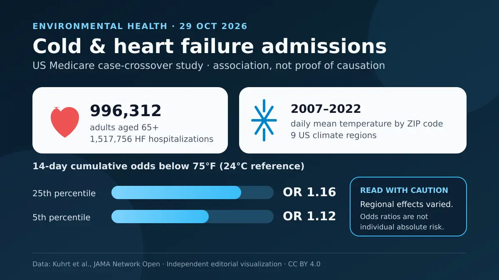

Bu çalışma, kalp yetersizliği olan yaşlılara yönelik halk sağlığı planlarının yalnız sıcak hava dalgalarına odaklanmaması gerektiğini; bir bölge için olağan sayılabilecek soğuğun da önemli olabileceğini düşündürüyor. Bulgular topluluk düzeyinde ilişki gösterir; soğuğun tek başına her yatışa neden olduğunu veya 75 °F eşiğinin tüm iklimler ve bireyler için tedavi değeri taşıdığını kanıtlamaz.

Bir dakikalık özet
Nathaniel Kuhrt, Ashwaghosha Parthasarathi, Daniel Bisno ve çalışma arkadaşları, ortam sıcaklığı ile kalp yetersizliği yatışlarını inceleyen ulusal araştırmayı 29 Ekim 2026'da JAMA Network Open'da yayımladı. Araştırmacılar 2007-2022 arasında 65 yaş ve üzerindeki 996.312 Medicare yararlanıcısında gerçekleşen 1.517.756 yatışı değerlendirdi. Hastaların ortalama yaşı 78 idi; yüzde 60,3'ü kadındı. [1]
Yaklaşık 24 °C'ye karşılık gelen 75 °F'lik günlük ortalamayla karşılaştırıldığında, daha düşük sıcaklıklar 14 günlük kümülatif dönemde daha yüksek yatış olasılığıyla ilişkiliydi. Ulusal ölçekte sıcaklığın 25. yüzdelik diliminde olasılık oranı 1,16, 5. yüzdelik diliminde 1,12 idi. İlişki doğrusal değildi ve dokuz iklim bölgesi arasında değişiyordu; bu nedenle sayılar 'hava ne kadar soğuksa risk mutlaka o kadar yüksek' diye okunmamalı. [1] [2]
Çalışma nasıl yürütüldü?
Zaman tabakalı vaka-çapraz tasarım kullanıldı: Her hastanın yatış günü, aynı ay ve yıl içindeki aynı hafta gününe denk gelen en çok dört olaysız günle karşılaştırıldı. Böylece her kişi kendi kontrolü oldu; genetik, kronik hastalıklar ve birçok kalıcı davranış gibi zaman içinde değişmeyen özellikler büyük ölçüde kontrol edildi. Maruziyet, ikamet posta kodu için 4 kilometrelik ızgara verilerinden hesaplanan günlük ortalama sıcaklıktı. İnce partikül madde PM2.5, bağıl nem ve federal tatiller de modele eklendi. [1]
75 °F'nin altındaki soğuk için 14 güne kadar birikimli etki, üzerindeki sıcaklık için aynı gün etkisi modellendi. 75 °F, daha önce ABD'de bildirilen en düşük ölüm sıcaklığına dayanarak seçildi; fizyolojik eşik veya ev sıcaklığı önerisi değildir. Eşlik eden başyazı, sabit referansın bölgeleri doğrudan karşılaştırmayı zorlaştırdığını vurguladı: Bir bölgede 25. yüzdelik dilim 30 °F iken başka bir bölgede 54 °F olabiliyordu. [1] [2]
Ana sonuç ve bölgesel farklar
Bölgeye özgü 25. yüzdelik sıcaklıkta yatış olasılığı tüm bölgelerde istatistiksel olarak yüksekti. En büyük tahminler Batı Kuzey Merkez'de 1,50, Batı'da 1,30, Kuzeybatı'da 1,29 ve Güneybatı'da 1,27 olasılık oranlarıyla görüldü. 5. yüzdelik dilimde oranlar Batı Kuzey Merkez'de 1,62, Batı'da 1,40, Kuzeybatı ve Güneybatı'da 1,34'tü; iki bölgede ise güven aralığı fark olmama olasılığını içeriyordu. [1]
75 °F'nin üzerindeki sıcaklıklar, ulusal ölçekte veya bölgelerin çoğunda kalp yetersizliği yatışında klinik açıdan anlamlı bir artışla ilişkili değildi. Bu, sıcak havanın zararsız olduğu anlamına gelmez: Araştırma ölüm, diğer kalp hastalıkları, birleşik ısı yükü ya da bu topluluk dışındaki kişileri ölçmedi. Hastaneye ulaşmadan ölüm, klima kullanımı ve davranışsal uyum da yatış örüntüsünü değiştirebilir. Hem yazarlar hem başyazı, yatış sonucunun ölüme genellenmemesi gerektiğini belirtti. [1] [2]
Soğuk neden önemli olabilir?
Soğuk, sempatik sinir sistemini etkinleştirebilir; damarları daraltıp kalbin karşılaştığı yükü ve oksijen gereksinimini artırabilir. Ritim bozuklukları, kan viskozitesi, iltihap ve pıhtılaşmadaki değişiklikler de olası yollardır. Bu mekanizmalar Amerikan Kalp Derneğinin 2026 tarihli uygunsuz sıcaklık ve kalp-damar sağlığı bildirisiyle uyumludur; ancak bu analizde doğrudan ölçülmediler. Biyolojik açıklama, nedensellik kanıtının yerine geçmez. [1] [3]
Bölgesel çeşitlilik yalnız termometreyle açıklanamaz. Konut ve ısınma kalitesi, yoksulluk, sosyal yalnızlık, sağlık hizmetine erişim, eşlik eden hastalıklar, uygun giysi ve alışkanlıklar maruziyeti ve kırılganlığı değiştirebilir. Bu nedenle çalışmanın değeri bireysel reçeteden çok halk sağlığı planlamasındadır: Soğuk uyarıları, ısınma merkezleri, barınaklar, yakıt yardımı ve konut iyileştirmeleri yerel iklime ve kapasiteye göre tasarlanmalıdır. [1] [3]
Sınırlılıklar ve kanıt düzeyi
Sigorta kayıtlarında kalp yetersizliğinin nedeni, ejeksiyon fraksiyonu ve klinik şiddeti yoktu. Posta kodu sıcaklığı, kişinin evde ya da dışarıda yaşadığı gerçek sıcaklık olmayabilir. Günlük davranışlar, akut enfeksiyon ve ısıtma veya klima kullanımı ölçülmedi. Geniş iklim bölgeleri bölge içindeki farkları örtebilir; sonuçlar genç yetişkinlere, Medicare Advantage üyelerine veya başka ülkelere doğrudan taşınamaz. [1]
Kanıt düzeyi açısından büyük örneklem ve kendi kendini kontrol eden tasarım kısa süreli maruziyeti incelemek için önemli güçlü yönlerdir; duyarlılık analizleri de ana örüntüyü destekledi. Yine de çalışma randomize değildi ve zamana göre değişen karıştırıcılık kalmış olabilir. Olasılık oranı da tek bir kişinin mutlak riskini vermez. Bu bulgu neden belirlemek veya kişisel bir sıcaklık reçetesi yazmaktan çok hipotez geliştirme ve halk sağlığı planlaması için uygundur. [1] [2]
Reçete vermeden pratik mesaj
Sağlık sistemleri için mesaj, tek bir evrensel sayı kullanmak yerine hem orta hem şiddetli soğuğu ve yerel farklılıkları izlemektir. Kalp yetersizliği olan bir kişi açısından bu makale, ilaçları, sıvı alımını veya ev sıcaklığını kendi başına değiştirme gerekçesi değildir. Soğuk hava planı; uyarı belirtileri, eşlik eden hastalıklar ve konut koşulları dikkate alınarak tedavi ekibiyle belirlenmelidir. Çalışma hedefli iklim uyum politikalarını destekler, ancak belirli bir müdahalenin etkinliğini doğrudan sınamamıştır.
Birincil kaynaklar
JAMA Network Open'daki açık erişimli ana makalenin tam metni, listelenen yöntem ekleri, eşlik eden başyazı ve Amerikan Kalp Derneğinin bilimsel bildirisi incelendi. Makale 29 Ekim 2026'da yayımlandı; inceleme sırasında başlık veya DOI için düzeltme, geri çekme ya da endişe bildirimi görülmedi. Eşlik eden görsel birkaç yayımlanmış sayının bağımsız gösterimidir; makalenin şekli veya haritası değildir.
- Kuhrt N, Parthasarathi A, Bisno DI ve diğerleri · ABD'de yaşlılarda ortam sıcaklığı ve kalp yetersizliği yatışları · JAMA Network Open · 29 Ekim 2026 · DOI: 10.1001/jamanetworkopen.2026.41051
- Puvvula J, Khatana SAM · Başyazı: Sıcaklık ve kalp yetersizliğinde maruziyet-yanıt eğrisi · JAMA Network Open · 29 Ekim 2026 · DOI: 10.1001/jamanetworkopen.2026.40735
- Hanneman K ve diğerleri · Amerikan Kalp Derneği uygunsuz sıcaklık ve kalp-damar sağlığı bilimsel bildirisi · Circulation · 2026 · DOI: 10.1161/CIR.0000000000001419
Bu yazı genel bilgilendirme amaçlıdır; kişiye özel tanı veya tedavinin yerini tutmaz.